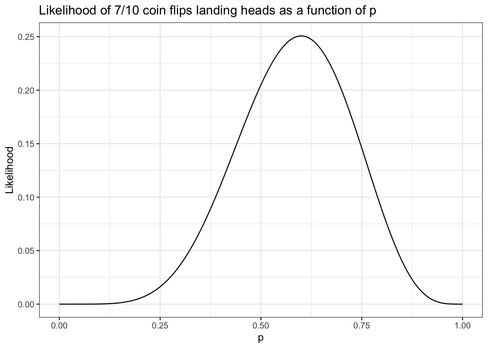

library(tidyverse)
coin_flips = read_csv("https://sta101-fa22.netlify.app/static/appex/data/coin_flips_LE.csv")Likelihoods
STA 101
Bulletin
- Lab 05 due Thursday
- Final project released
Today
By the end of today you will…
- be able to define a likelihood function
- understand the intuition behind likelihood-based inference
Getting started
Download this application exercise by pasting the code below into your console
download.file("https://sta101-fa22.netlify.app/static/appex/ae14.qmd",
destfile = "ae14.qmd")Load packages
The likelihood function
\[ L(\theta | x) = f(x | \theta) \]
The likelihood of parameter(s) \(\theta\) given the data \(x\) is equivalent to the density of sample \(x\) given the parameter(s) \(\theta\).
- If \(x\) is a discrete random variable, the likelihood function is the probability of the data given \(\theta\).
Example 1
\[ X \sim \text{Binomial}(k, p) \]
where \(k\) is the number of trials and \(p\) is the probability of a success. The parameters of the distribution are \(k\) and \(p\).
Note
Recall: you can find the formula for the binomial density function in the documentation. See ?dbinom
Exercise 1
Imagine we flip a coin 10 times and observe 7 heads and 3 tails. All together we have:
- \(k\): __
- \(x\): __
There is some true \(p\) for this coin. What is your best guess (or estimate), \(\hat{p}\)?
num_success = coin_flips %>%
summarize(total = sum(result)) %>%
pull(total)
likelihood = function(p) {
return(dbinom(x = num_success, size = 10, prob = p))
}
ggplot() +
xlim(0, 1) +
geom_function(fun = likelihood) +
theme_bw() +
labs(x = "p", y = "Likelihood",
title = "Likelihood of 7/10 coin flips landing heads as a function of p") 
In the example above, \(p\) is the parameter we are interested in, so we would write \(L(p | x)\). If we maximize \(L(p | x)\), we obtain the maximum likelihood estimate \(\hat{p}\). The maximum likelihood estimate is the value of the parameter that maximizes the likelihood function.
Example 2
Likelihood-based inference works with continuous random variables as well.
\[ X \sim N(\mu, \sigma) \]
where \(\mu\) is the mean (location) and \(\sigma\) is the standard deviation (scale). \(\mu\) and \(\sigma\) are the parameters of the distribution.
Exercise 2
Imagine resting heart rates in this class are randomly distributed with unknown mean \(\mu\) and a standard deviation of 5 beats per minute. You randomly sample 1 person in the class and find their heart rate is 72 beats per minute. What is your best guess for the mean, \(\hat{\mu}\)?
[answer here]
You randomly sample two additional people and find their resting heart rate is 65 and 75 beats per minute. What is your new best guess \(\hat{\mu}\) given these three data points?
[answer here]
Use geom_vline() to add your guesses to the plots below.
likelihoodNormal1 = function(mu) {
return(dnorm(x = 72 , mean = mu, sd = 5))
}
likelihoodNormal2 = function(mu) {
return(dnorm(x = 65 , mean = mu, sd = 5))
}
likelihoodNormal3 = function(mu) {
return(dnorm(x = 75 , mean = mu, sd = 5))
}
ggplot() +
xlim(50, 90) +
geom_function(fun = likelihoodNormal1) +
theme_bw() +
labs(x = "Mu",
y = "Likelihood",
title = "Likelihood of mu given 1 data point")
It’s a similar story for each of the other two data points. If we want to find the likelihood of some parameter under three independent observations, we can multiply our likelihoods together.
combinedLikelihood = function(mu) {
return(likelihoodNormal1(mu) *
likelihoodNormal2(mu) *
likelihoodNormal3(mu))
}
ggplot() +
xlim(50, 90) +
geom_function(fun = combinedLikelihood) +
theme_bw() +
labs(x = "Mu",
y = "Likelihood",
title = "Likelihood of mu given 3 data points")
What do you notice about the shape of the function as the number of data points increases?
Note
As the number of data points increases, the product of several likelihood functions gets very small very quickly. For this reason we often work with the log-likelihood. It is a fact that if \(x < y\) then \(\log(x) < \log(y)\). This property is known as monotonicity. Because of this, the maximum of the log-likelihood will be the same as the maximum of the likelihood function.
Example 3
In all of the examples above, the findings were obvious upon inspection. How do you compute the likelihood in, e.g. a regression setting? Remember that \(\text{AIC} = 2k - 2 \log \text{likelihood}\).
A simple model:
\[ y = \beta_0 + \beta_1 x_1 + \epsilon \]
A common assumption:
\[ \epsilon \sim N(0, \sigma) \]
From this assumption:
\[ y \sim N(\beta_0 + \beta_1x_1, \sigma) \]
Exercise 3
Assume \(\sigma = 2\) is known and \(\beta_0 = 3\). You observe the data point, \((x,y) = (1, 6.5)\). What is your best estimate \(\hat{\beta_1}\)?
regLikelihood = function(beta1) {
return(dnorm(x = 6.5, mean = (1 + (beta1*1)), sd = 2))
}
ggplot() +
xlim(-1, 12) +
geom_function(fun = regLikelihood) +
theme_bw() +
labs(x = "beta1",
y = "Likelihood",
title = "Likelihood of beta1 given 1 data points")
In the code above, why do we write x = 6.5 when \(6.5\) is the observed value of \(y\)?
[answer here]
You observe two more data points, \((2, 10)\) and \((5,26)\). What is your best guess of \(\hat{\beta_1}\) based on the three points you observed?
regLikelihood2 = function(beta1) {
return(dnorm(x = 10, mean = (1 + (beta1*2)), sd = 2))
}
regLikelihood3 = function(beta1) {
return(dnorm(x = 26, mean = (1 + (beta1*5)), sd = 2))
}
combinedRegLikelihood = function(beta1){
return(log(regLikelihood(beta1)) + log(regLikelihood2(beta1)) +
log(regLikelihood3(beta1)))
}
ggplot() +
xlim(-2, 12) +
geom_function(fun = combinedRegLikelihood) +
theme_bw() +
labs(x = "beta1",
y = "log-likelihood",
title = "Likelihood of beta1 given 3 data points")